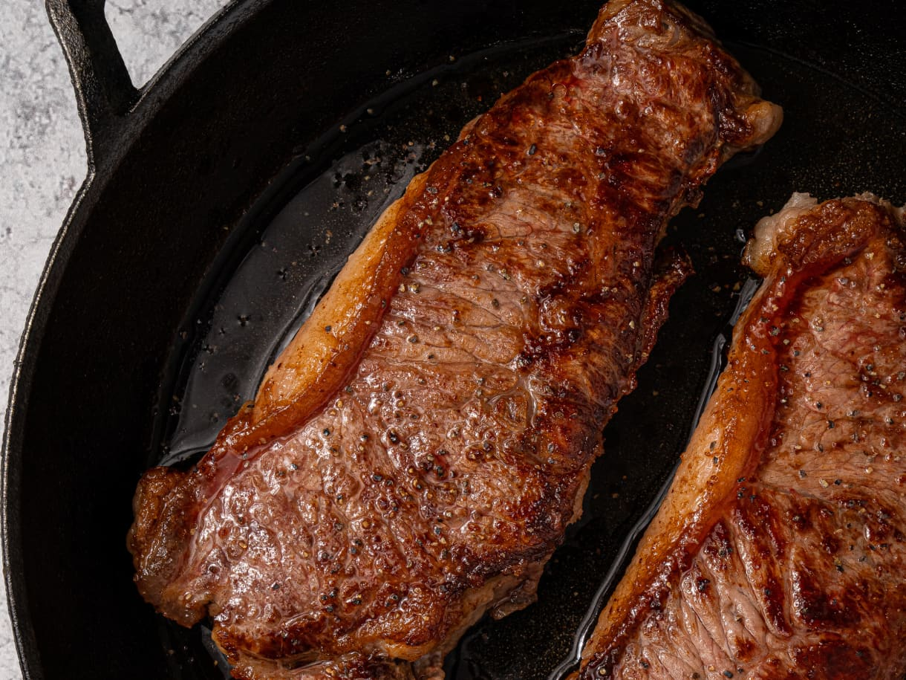

Home
New York Strip

Description
You don't need to go to a steakhouse to get quality NewYork Strip. You can make a excellent steak at home! You may think you need a large kitchen and full staff, but you don't!
All you really need is a cast iron skillet and the proper technique.
ingredients
- 2 tablespoons vegetable oil
- 2 (about 1 1/4-inch thick) boneless New York strip steaks (at least 12 ounces each)
- 1 1/2 teaspoons kosher salt, divided
- 8 ounces green beans
- 2 cloves garlic
- 1 pint grape or cherry tomatoes (about 10 ounces)
- Freshly ground black pepper (optional)
Steps
- Heat 2 tablespoons vegetable oil in a large frying pan or cast-iron skillet over medium-high heat just until starting to smoke.
Meanwhile, pat 2 New York strip steaks very dry with paper towels. Season all over with 1 teaspoon of the kosher salt.
- Add the steaks to the pan and reduce the heat to medium. Cook, flipping every 2 minutes, until the center of the steaks register 120ºF for medium-rare, 9 to 14 minutes total.
Meanwhile, trim the stems ends from 8 ounces green beans and mince 2 garlic cloves.
- When the steaks are ready, transfer to plates or a clean cutting board and top with a few grinds of black pepper if desired. Add the green beans and 1 pint grape or cherry tomatoes
to the pan and season with the remaining 1/2 teaspoon kosher salt. Cook over medium heat, stirring rarely, until the greens beans are crisp tender and the tomatoes are blistered in
spots, 3 to 4 minutes. Add the garlic and cook until fragrant, about 30 seconds.
- Slice the steak if desired and serve with the green beans and tomatoes.